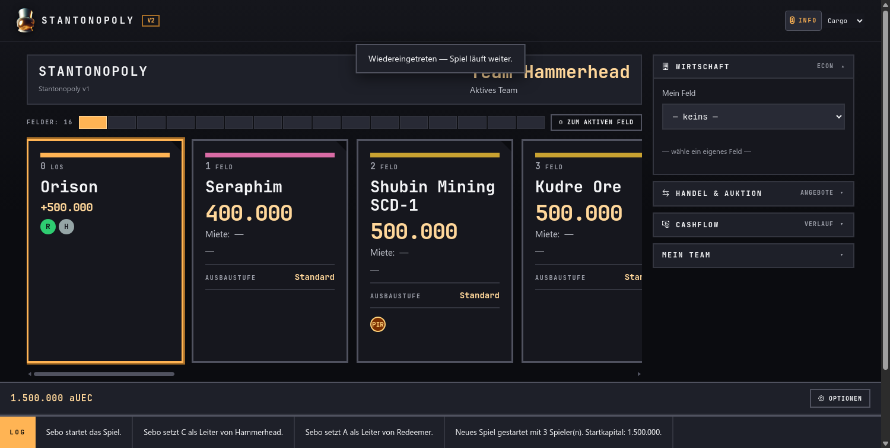
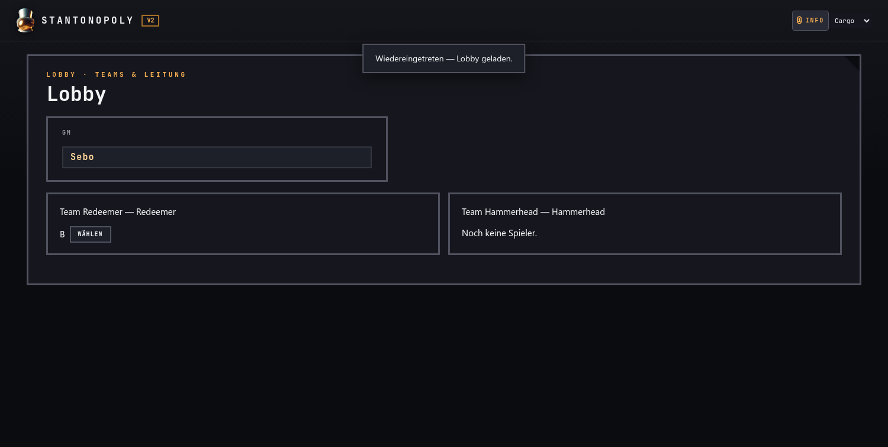
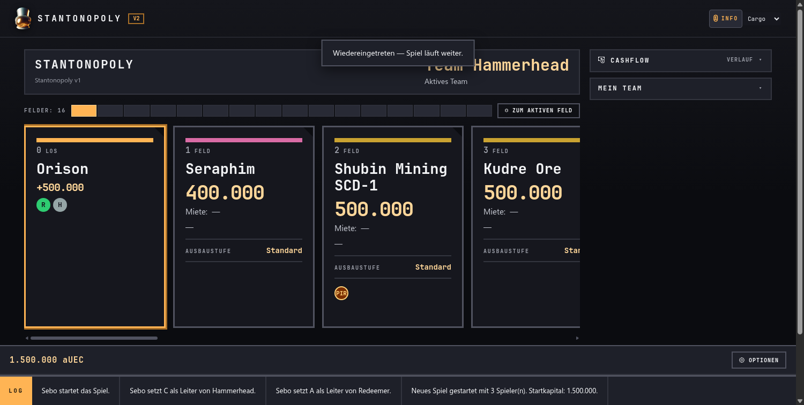

STANTONOPOLYV2
Rollen-Sicht: Was du als GM, Teamleiter, Spieler, Pirat, Preset-Editor oder Manager tun kannst — Schritt für Schritt, nur aus deiner Perspektive.
Game Master (GM)
1. Ein Spiel erstellen
Klicke „Spiel erstellen", wähle die Anzahl Teams (2–8), ein Preset (z. B. „Stantonopoly v1") und gib je Team eine Schiffsausstattung an. Beim Eintippen eines Schiffsnamens erscheinen Vorschläge echter Star-Citizen-Schiffe aus dem eingebauten SC-Katalog — du musst die Namen nicht tippen. Über „ Karte & Regeln bearbeiten" öffnest du den Preset-Editor, um optional Regeln an-/abzuschalten (Piraten, Aufgaben, Armistice …).

2. Codes verteilen und starten
In der Lobby (GM-Sicht) siehst du deinen privaten GM-Code („NUR DU") und die Einladungscodes je Team (und das Piraten-Team, falls aktiv). Verteile die Team-Codes an deine Spieler — jeder betritt sein Team damit. Der GM-Code bleibt bei dir. Sind alle drin: SPIEL STARTEN.

3. Während des Spiels
- Pausieren / Fortsetzen: Ein Spiel jederzeit anhalten und später nahtlos weiterlaufen lassen.
- Teamleader ernennen: Falls ein Team streitet, kannst du per GM-Option einen Teamleader bestimmen.
- Beobachten: Du siehst das ganze Brett, alle Teams und die Logs.
- Selbst mitspielen: Du kannst einem Team beitreten und aktiv mitwürfeln.
4. Spielende
Das Spiel endet, wenn nur noch ein Team Vermögen besitzt. Das Endresultat zeigt den Sieger und — falls Piraten aktiv waren — die Piraten-Beute als Statistik. Beendete Spiele findest du in der Spiele-Liste (Tab „Abgeschlossen").
Teamleiter
1. Teamleader werden
Per Team-Abstimmung vor dem Spielstart oder durch Ernennung vom GM. Der Teamleader kann die Rolle jederzeit an ein anderes Teammitglied abgeben.
2. So sieht deine Ansicht aus
Als Leader siehst du rechts die Panels Wirtschaft (ECON), Handel & Auktion, Cashflow und Mein Team — und du hast den WÜRFELN-Button, wenn euer Team am Zug ist. Normale Teammitglieder sehen diese Aktionen nicht.

3. Deine Aktionen als Leader
| Aktion | Erklärung |
|---|---|
| Würfeln | Du würfelst für das Team und bewegst eure Figur über die Felder. |
| Kaufen | Landest du auf einem freien Grundstück, kannst du es kaufen oder überspringen. |
| Ausbauen OPTIONAL | Ein eigenes Feld in der Wirtschaft auswählen → Ausbaustufe erhöhen (Miete steigt). Nur möglich, wenn die Bauregel im Preset aktiv ist. |
| Hypothek / Abbau | Ein eigenes Feld beleihen oder abreißen (Sanierung bei Geldnot). |
| Handel / Auktion | Eigene Felder verkaufen, Käufe anbieten, auf Angebote antworten, versteigern. Verkauf an die Bank nur, wenn im Preset aktiv. |
| Zug beenden | Nach deiner Aktion NÄCHSTER ZUG (oder Überspringen), um ans nächste Team zu übergeben. |
4. Leader abgeben
Über Mein Team kannst du die Teamleader-Rolle an ein anderes Mitglied deines Teams übertragen — z. B. wenn jemand anderes die Wirtschaft übernehmen soll.
Normaler Spieler
1. Einem Spiel beitreten
Der GM hat für jedes Team einen Einladungscode. Eben diesen Team-Code bekommst du vom GM. Öffne Stantonopoly, klicke „Mit Code beitreten", gib den Code und deinen Namen ein — du landest in der Lobby.

2. Teamleader-Wahl
Bevor das Spiel startet, stimmt euer Team über den Teamleader ab — die Person, die später die Züge eures Teams ausführt. Du nimmst an der Abstimmung teil; der Teamleader wird übernommen bzw. gewählt.
3. Deine Sicht während des Spiels
Als normales Mitglied verfolgst du das Spiel und euer Team. Du siehst das Brett, euren Kontostand, den Cashflow (Geldbewegungen des Teams) und Mein Team. Die Wirtschafts- und Handels-Panels sowie Würfel-/Kauf-Aktionen sind für dich nicht sichtbar — die führt dein Teamleader aus. Ist euer Team am Zug, erscheint die Anzeige „DU BIST AM ZUG"; der Teamleader würfelt dann.

4. Was du beiträgst
- Aufgaben erfüllen OPTIONAL: Ist die Aufgabenregel aktiv, kann jedes Teammitglied die in Star Citizen definierte Aufgabe erfüllen (z. B. anfliegen, erledigen). Der Teamleader bestätigt den Abschluss dann im Spiel.
- Teamleiter wählen / übernehmen: Du stimmst mit ab und kannst über die Rollen-Übergabe (dein Leader) ggf. selbst Leader werden.
- Zuschauen & mitfiebern: Du verfolgst alle Züge, Handels- und Piraten-Ereignisse deines Teams live.
Pirat
1. Als Pirat einsteigen
Das Piratenteam ist ein eigenes Team mit eigenem Piraten-Einladungscode (der GM verteilt ihn). Du trittst damit bei wie in jedem anderen Team.

2. Was Piraten können — und was nicht
- Eigene Würfelregel — die Piraten ziehen mit eigener Würfelzahl über das Brett.
- Schutzgeld kassieren und Fluchten entscheiden (Erwischt/Entwischt).
- Keine Wirtschaft (keine Felder kaufen/bauen), kein Handel, keine Auktion.
- Die Piraten können nicht gewinnen — ihr Beutegut zählt nur als Statistik am Ende.
3. Begegnung: Schutzgeld oder Flucht
Landet ein normales Team auf dem Feld der Piraten, öffnet sich ein Entscheidungs-Modal:
- Schutzgeld zahlen: Das Team zahlt den festgelegten Betrag, die Runde läuft normal weiter.
- Flucht versuchen: Das Team versucht, in Star Citizen per Quantensprung aus der Reichweite der Piraten zu fliehen („Entwischt"). Entscheiden tust du als Pirat im Urteils-Modal: Erwischt (höheres Strafgeld) oder Entwischt. Schafft das Team den Sprung bis zu seinem nächsten Zug nicht — und du bestätigst das auch nicht als entwischt —, gilt es automatisch als erwischt.
- Fair Play: Entscheidend ist, dass wirklich vor euch geflohen wurde — gelang das im Spiel vor dem nächsten Zug nicht, wird erwischt.

4. Teamleader der Piraten
Wie bei normalen Teams stimmen die Piraten einen Teamleader ab (oder der GM ernennt einen). Der Piraten-Leader führt die Team-Aktionen aus — auch das Urteil (Erwischt/Entwischt) bei einer Flucht.
5. Bot-Pirat: wenn niemand das Piratenteam spielt
Ist das Piratensystem aktiv, aber kein Spieler dem Piratenteam beigetreten, übernimmt ein Bot die Piraten. Das Urteil wird dann automatisch und zufällig gefällt — niemand wartet.
- Wahrscheinlichkeit „Erwischt": startet bei 40% und steigt mit dem Besitzanteil des fliehenden Teams bis max. 65% — wer mehr besitzt, wird eher erwischt.
- Der Bot erwartet keine Eingabe — sobald ein Team flieht, entscheidet er sofort.
- Sobald ein Spieler beitritt, übernimmt er die Kontrolle und der Bot schaltet sich ab.
- Piraten können nicht aufgeben. Verlässt der letzte Spieler das Team, übernimmt der Bot (die Figur bleibt auf dem Feld).
Preset-Editor
1. Was ist ein Preset?
Ein Preset ist eine komplett vorgefertigte Spielkonfiguration: die Feldreihe (Karte) plus alle Regel-Einstellungen. Beim „Spiel erstellen" wählst du ein Preset (z. B. „Stantonopoly v1") und erhältst damit dessen Standard-Karte und -Regeln.
2. So öffnest du den Editor
Beim Spiel-Erstellen klickst du „ Karte & Regeln bearbeiten". Ohne Manager-Code arbeitest du im Standardmodus: Deine Änderungen gelten nur für das Spiel, das du gerade erstellst. Gibst du einen Manager-Code ein (siehe Abschnitt Manager), kannst du Presets dauerhaft speichern.

3. Die Karte bearbeiten (Felder)
Jedes Feld hat einen Typ, Namen, Preis und (bei Grundstücken) eine Farbgruppe. Per ↑ / ↓ verschiebst du die Position, per × löschst du ein Feld. Beim Namen erscheinen automatisch Vorschläge echter Star-Citizen-Orte — du musst den vollen Namen nicht eintippen.
| Feldtyp | Bedeutung | Einstellbar |
|---|---|---|
| LOS | Startfeld mit Bonus beim Überqueren. | Name, BONUS-Betrag. |
| Grundstück | Kaufbares Feld (wie im Monopoly). | Name, Kaufpreis, Farbgruppe. |
| Ereignis | Geld verdienen oder verlieren bei Landung. | Name, Effekt (positiv = Gebühr, negativ = Bonus). |
| Steuer | Betrag bei Landung zahlen. | Name, Steuerhöhe in aUEC. |
| Gefängnis | Nächste Runde aussetzen oder sofort freikaufen. | Name, Freikauf-Preis. |
| Frei Parken | Neutrales Feld. | Name. |
| Spezial-Grundstück | Besitz geht beim Landen sofort an das landende Team über — auch wenn es einem anderen gehört. Nicht handelbar/ausbaubar/hypothekierbar. | Name, LOS-Strafe/Bonus (positiv = Strafgebühr, negativ = Bonus). |
4. Die Regeln — was du einstellst
Im unteren Teil des Editors findest du die Regel-Gruppen. Optionale Regeln sind per Schalter/Häkchen an-/abschaltbar und in dieser Anleitung mit OPTIONAL gekennzeichnet.
| Gruppe / Option | Was es steuert | Status |
|---|---|---|
| Würfel | Würfel-Konfiguration (1W6, 2W6, freier Wert). | Standard |
| Zugzeit | Zeit pro Teamzug in Sekunden (Timer). | Standard |
| Mieten (Ausbaustufen) | Mietmultiplikator je Ausbaustufe. | Standard |
| Baukosten | Kosten pro Ausbaustufe. | Standard |
| Hypothek / Entlasten | Satz für das Beleihen und Entlasten. | Standard |
| Abbau / Rückerstattung | Rückerstattung beim Abbau eines Feldes. | Standard |
| Verkauf an die Bank | Eigene Felder an die Bank verkaufen. | OPTIONAL |
| Auktion | Zeitdauer einer Versteigerung. | Standard |
| Abstimmung | Zeitdauer von Abstimmungen. | Standard |
| Armistice | Schutz-/Ruhe-Zone-Felder im Spiel. | OPTIONAL |
| Bauregel (Farbreihe) | Ausbauen nur in der ganzen Farbreihe und gleichmäßig. | OPTIONAL |
| Aufgaben | Aufgabenregel aktiv (in SC erledigen, hier bestätigen). | OPTIONAL |
| Aufgaben-Timer | Zeitlimit pro Aufgabe. | nur bei Aufgaben |
| Aufgaben brauchen Handel | Aufgaben setzen eine Handels-Aktion voraus. | nur bei Aufgaben |
| Piratensystem | Piraten-Team im Spiel. | OPTIONAL |
| Piraten-Würfel | Eigene Würfelregel der Piraten. | nur bei Piraten |
| Schutzgeld | Betrag bei Piraten-Begegnung. | nur bei Piraten |
| Strafgeld (Erwischt) | Multiplikator für die „Erwischt"-Flucht. | nur bei Piraten |
| Piraten-Wartezeit | Teamzüge, die die Piraten auf einem Feld warten. | nur bei Piraten |
| Piraten einmal pro Runde | Ein Team wird pro Durchgang nur einmal angegangen. | OPTIONAL (nur bei Piraten) |
5. Farbgruppen und Ausbaustufen
Die Farbgruppe eines Grundstücks bestimmt die Optik und (bei aktiver Bauregel) das Ausbauen. Die Ausbaustufen (ALLEIN → CYCLONE → STORM → BALLISTA → ARMISTICE) bestimmen, wie stark Miete und Baukosten wachsen — je Stufe stellt du den Multiplikator ein.
Manager
1. Wofür ist der Manager da?
Ein normaler Spieler darf im Preset-Editor nur temporär für sein eigenes Spiel ändern (Standardmodus). Ein Manager kann Presets dauerhaft bearbeiten, neu erstellen und speichern. Den Manager-Code bekommst du als Person vom Admin.
2. Im Preset-Editor einloggen
Beim Spiel-Erstellen öffnest du den Editor über „ Karte & Regeln bearbeiten". Dort oben siehst du die Manager-Bar: Gib deinen Manager-Code ein und klicke AKTIVIEREN.
3. Was ein Manager darf
- Bestehende Presets bearbeiten und speichern (auch eingebaute — sie bleiben als Preset erhalten).
- Neue Presets erstellen und dauerhaft speichern.